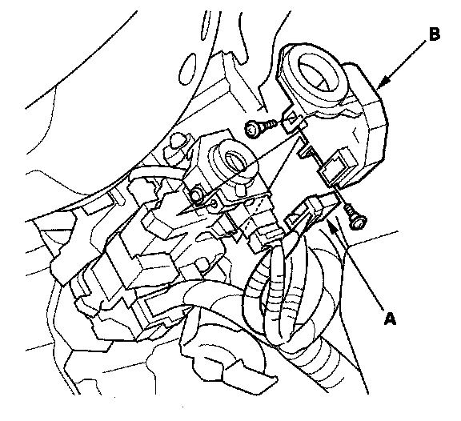

Alarm Module: Service and Repair
Immobilizer-keyless Control Unit ReplacementNOTE: All registered keys (with built in remote transmitter) are necessary for replacement of the immobilizer-keyless control unit.
1. Remove the driver's dashboard lower cover.
2. Remove the steering column covers.

3. Disconnect the 7P connector (A) from the immobilizer-keyless control unit (B).
4. Remove the two screws and the immobilizer-keyless control unit from the ignition key cylinder.
5. Install the immobilizer-keyless control unit in the reverse order of removal.
6. After replacement, turn the ignition switch ON (II).
7. Connect the HDS to the data link connector.
8. Select "IMMOBI" from the "System Select" menu.
9. Select "immobilizer Setup" from the "Mode Menu".
10. Select "Replace Imm Unit".
11. Operate according to instructions of a screen of HDS.
12. After HDS operation, check the immobilizer system.
13. Verify the operation of every key and remote transmitter.